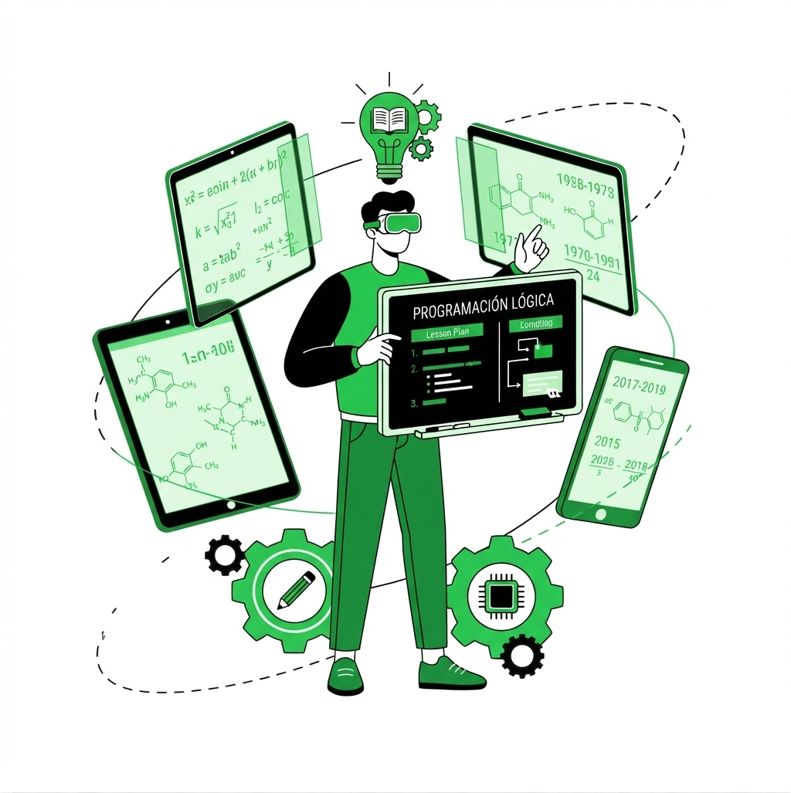

La Informática Administrativa es el puente que une al mundo de la tecnología con el día a día de una oficina o negocio.
No se trata solo de escribir código o abrir un gabinete para arreglar piezas, sino de poner orden en el caos administrativo. Desde organizar las bases de datos para que encontrar un archivo no sea una misión imposible, hasta configurar los sistemas de nómina, inventarios o plataformas internas para que el papeleo no te coma vivo. Su meta es que administradores, empleados y directivos tengan herramientas claras, rápidas y seguras para hacer su trabajo diario sin dolores de cabeza
En el día a día, mi labor en la informática administrativa no busca llenarte de tecnicismos raros ni convertir tu operación en una pantalla fría; funciono más bien como un soporte invisible detrás del telón. Le quito a tu equipo el peso del papeleo repetitivo, el desorden en las bases de datos y las fallas técnicas, para que puedan enfocarse de lleno en lo que mejor saben hacer.
La Informática Administrativa no es solo un conjunto de herramientas; es una filosofía de eficiencia. Se trata de anticipar problemas antes de que aparezcan, de automatizar tareas que consumen tiempo y de garantizar que la información fluya sin obstáculos. En pocas palabras, es el arte de hacer que la tecnología trabaje para ti, y no al revés.
